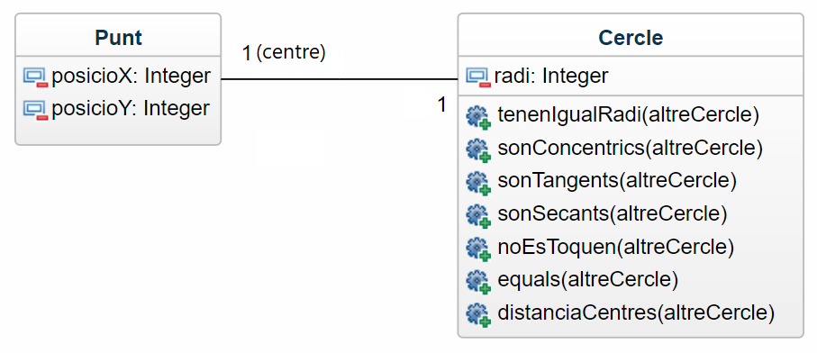
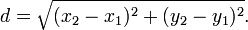

Ejercicio M8.2E4
Hacer una aplicación en la que el usuario introduce las coordenadas x, y de dos círculos y sus respectivos
radios.
Crear la classe PuntO i la classe Circulo:

Clase Punto
La clase Punto tendrá los atributos posicioX y posicioY. Además tendrá el constructor parametrizado con todos los
atributos de la clase.
Clase Circulo
La clase Círculo tendrá los atributos centro (un punto) y el radio (distancia entre el centro y cualquier punto de
la circunferencia).
Además, tendrá el constructor con todos los parámetros y los siguientes siete (7) métodos:
distanciaCentros(otroCírculo) : Devuelve la distancia entre el centro del círculo actual y el recibo como
parámetro.
Fórmula de distancia entre dos puntos

ecual (otroCírculo) : Devuelve true si dos círculos son iguales (si tienen el mismo centro y el mismo radio).
sonConcentrics(otroCírculo) : Devuelve true si dos círculos son concéntricos (tienen igual centro).
tienenIgualRadi(otroCírculo) : Retorna true si dos círculos tienen el mismo radio.
sonTangentes(otroCírculo) : Devuelve true si dos círculos son tangentes.
sonSecantes(otroCírculo) : Devuelve true si dos círculos son secantes.
noSeTocan(otroCírculo) : Devuelve true si dos círculos no se tocan.
Al final la aplicación mostrará por pantalla el resultado de realizar la llamada a todos los métodos de la clase
Círculo.